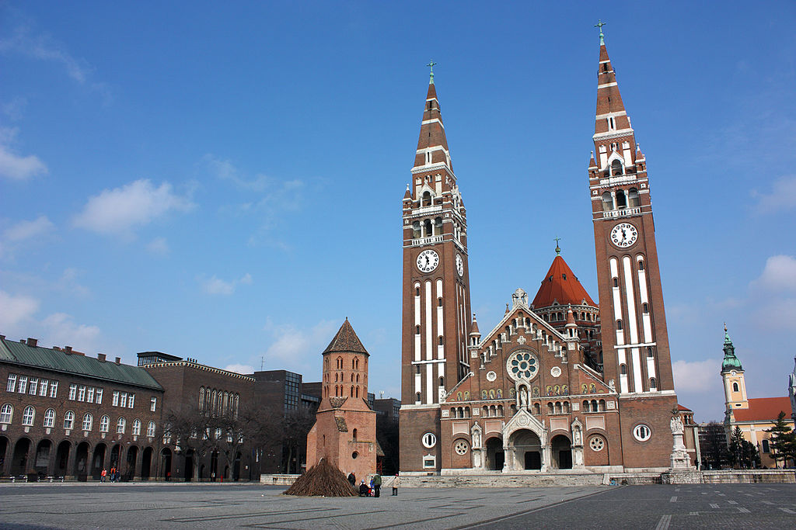
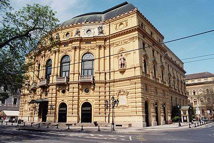
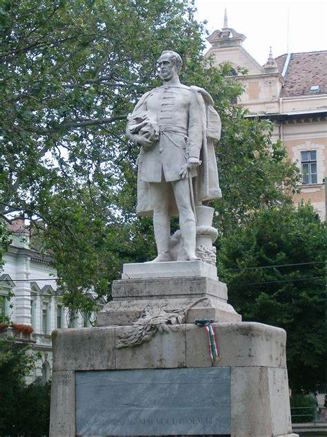
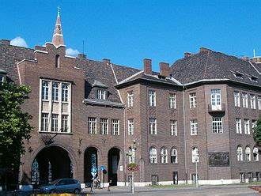
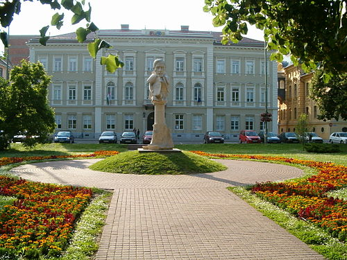
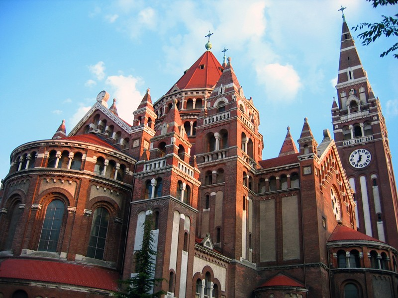

A várost először 1183-ban említik. Nagy Lajos király uralkodása idején a régió legjelentősebb városává
fejlődött, 1498-ban szabad királyi városi rangot kapott. A török uralom után, 1715-ben kapta vissza ezt a
rangját. 1719. május 21-én címert kapott, ma is május 21-én ünneplik a város napját. Az 1848–49-es
forradalom és szabadságharc több jeles eseménye is kötődik a városhoz.






 Charge and save
Charge and save